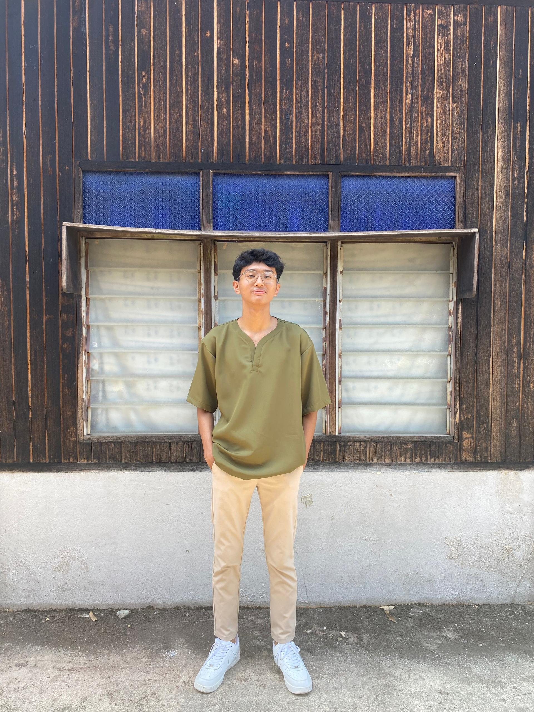

Étudiant malaisien en BUT R&T, passionné par les réseaux et la cybersécurité.

Je m’appelle Adam Ameer, j’ai 20 ans et je suis originaire de Selangor, en Malaisie. Actuellement étudiant en BUT Réseaux & Télécommunications. en France, j’ai choisi de poursuivre mes études à l’étranger afin de découvrir une nouvelle culture et de vivre une expérience internationale enrichissante. Depuis mon plus jeune âge, j’aime voyager et découvrir de nouveaux regions, ce que la raison à venir étudier en France.
Passionné par les nouvelles technologies, j’ai choisi l’informatique car je suis convaincu que ce domaine jouera un rôle essentiel dans l’avenir. Mon intérêt se porte particulièrement sur la cybersécurité, un secteur en constante évolution qui contribue à la protection des données et des systèmes numériques. Bien que je sois encore en réflexion concernant mon futur métier, j’aimerais évoluer dans ce domaine et, à terme, mettre mes compétences au service de mon pays.
En dehors de mes études, je suis un grand passionné de football, que ce soit sur le terrain ou devant les matchs. J’aime également écouter de la musique R&B, jouer aux jeux vidéo et m’intéresser avec des PC gaming. Les jeux d’action, d’aventure et les jeux narratifs occupent une place importante dans mes loisirs, car ils me permettent d’explorer et de découvrir des histoires.
Mes proches me décrivent comme une personne enthousiast, généreuse et avoir un bon sens de l’humour. J’aime aider les autres lorsque cela est nécessaire et travailler dans une ambiance positive. Mon arrivée en France m’a également permis de relever un défi important : m’adapter à une nouvelle langue, à une nouvelle culture et à un mode de vie différent. Cette expérience a renforcé mon autonomie, mon ouverture d’esprit et ma capacité d’adaptation.
Une application web sécurisée sur Raspberry Pi 3 pour la prise de photos automatisée et la gestion d'utilisateurs d'un banc avionique.
Réalisation d'une vidéo en anglais présentant les étapes de construction d'un PC gaming.
Intéressé par mon profil ? N'hésitez pas à me contacter ou à consulter mes profils en ligne.
adam.awahdi@email.com